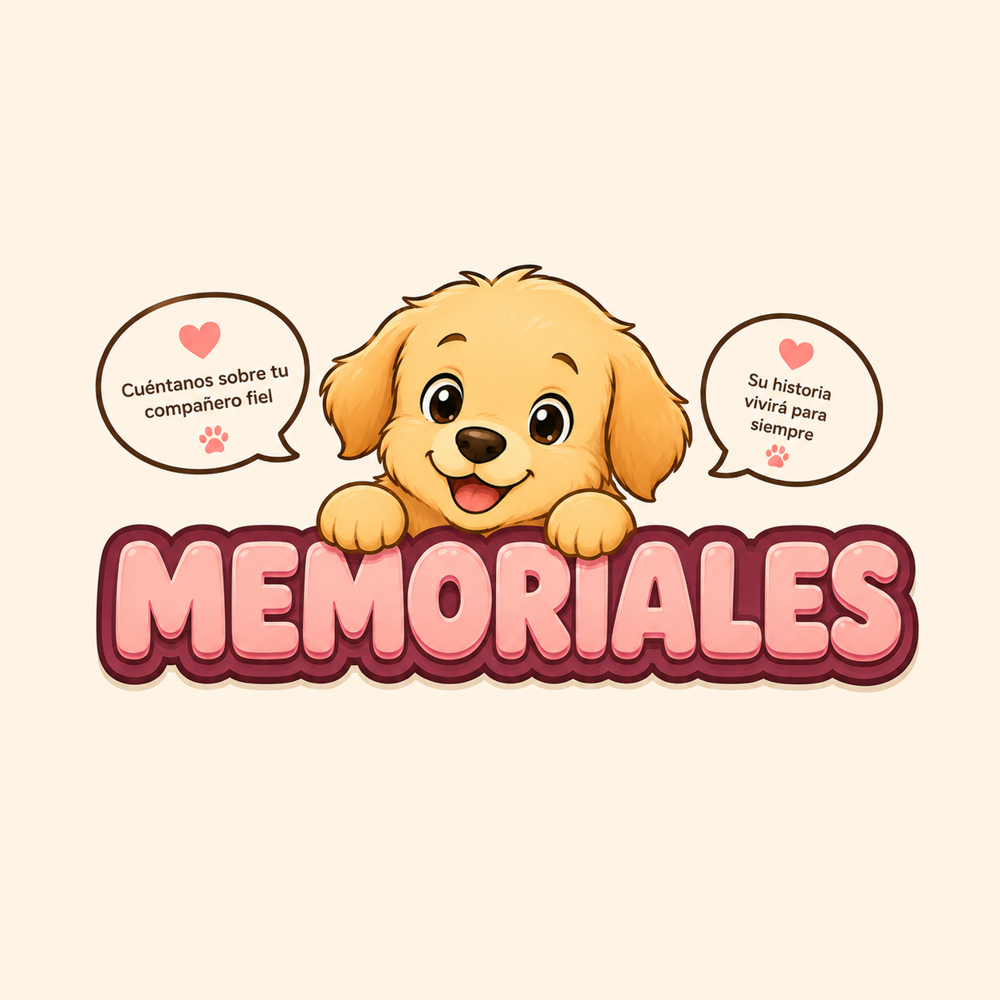
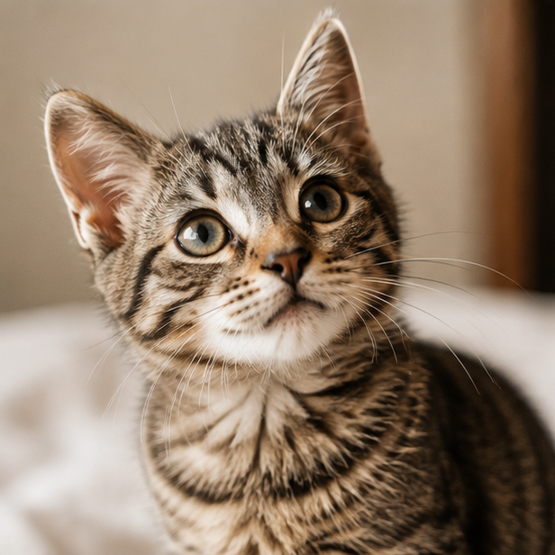
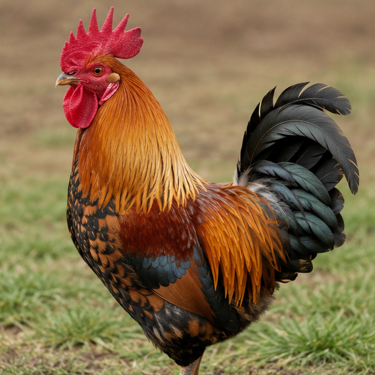

Memoriales de Huellitas Eternas
Un lugar para recordar a quienes dejaron una huellita.
Cada mascota tiene una historia única. Este espacio está pensado para conservar sus nombres, sus recuerdos y el amor que dejaron en nuestras vidas.

Sus historias permanecen
Porque recordar también es una forma de amar.
El memorial es un espacio dedicado a conservar la memoria de las mascotas que fueron parte de nuestras familias.
Aquí, cada historia puede representar una vida compartida, momentos especiales y una huellita que nunca deja de formar parte de nosotros.
Explora el memorial
Encuentra una historia.
La búsqueda y los filtros quedarán preparados para conectarse posteriormente con el sistema de datos del proyecto.
Historias que permanecen
Huellitas para recordar.
Estas tarjetas son la estructura visual inicial del memorial. Más adelante podrán conectarse con información real y registros dinámicos.


No encontramos esa huellita.
Prueba con otro nombre o cambia el tipo de mascota seleccionado.
Un homenaje especial
Cada historia merece ser contada.
El memorial no busca olvidar la ausencia. Busca conservar aquello que hizo especial la presencia de cada mascota.
Una fotografía, un nombre, una fecha, una anécdota o unas palabras pueden convertirse en una forma de mantener cerca esos recuerdos.
Tu historia también importa
¿Quieres crear un memorial?
Más adelante esta sección podrá conectarse con un formulario para crear y administrar memoriales personalizados.
Huellitas Eternas
Una huellita puede desaparecer de la vista, pero nunca del corazón.
Conoce más sobre nuestro proyecto o descubre más información sobre nuestra propuesta.